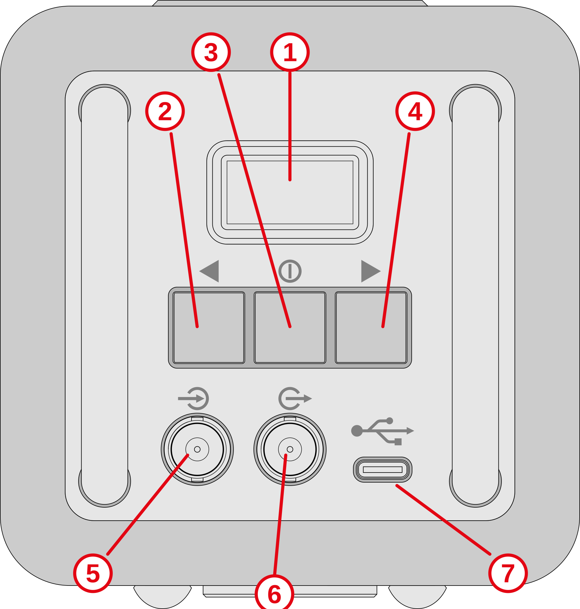
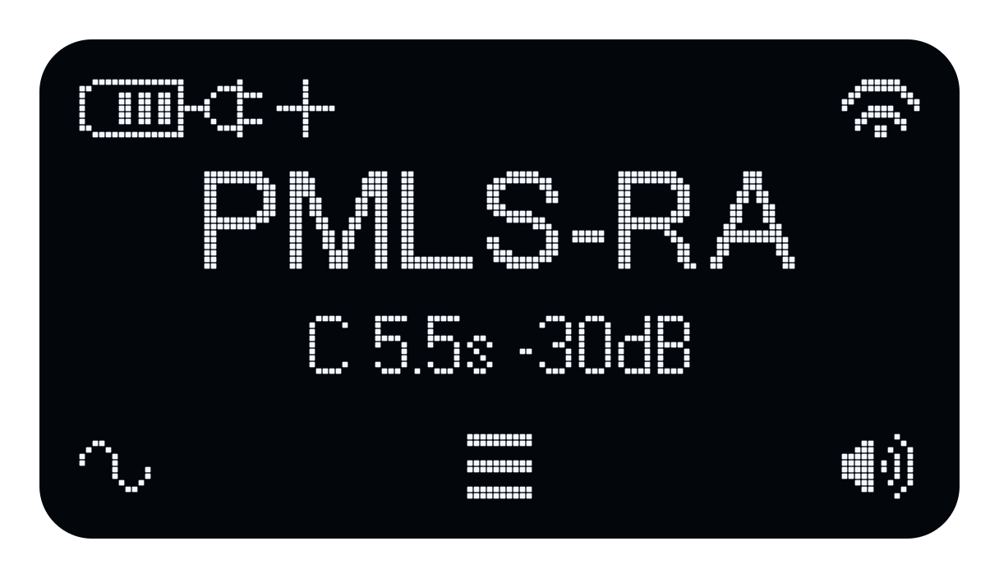

Draft: This Atlas guide is adapted from the Echo manual. Descriptions, specifications and illustrations still need to be checked for Atlas.
Atlas
Atlas is a portable omnidirectional source for room and building acoustics.
The Atlas is designed to be used with the DiracMobile or Dirac acoustics measurement software.
On this page
Main functions
- Built-in signals for room and building acoustics
- User signal playback
- BNC line input and output support
- Wi‑Fi based remote control using DiracMobile
Control panel

| Number | Function |
|---|---|
| 1 | OLED Display |
| 2 | Left button - Signal setup on the home page; decrease gain during playback |
| 3 | Middle button - Menu on the home page; stop playback and return home during playback |
| 4 | Right button - Start playback on the home page; increase gain during playback |
| 5 | BNC line level input |
| 6 | BNC line level output |
| 7 | USB-C power input |
Display

The home page shows the battery state (upper left), Wifi state (upper right), selected signal (center), and icons for the three buttons.
In this example, the battery is partially charged with a charger attached. The + sign indicates the charger can deliver at least 45 Watts of power.
Also in this example, the selected signal is a continuous (C) PMLS-RA signal with a length of 5.5 seconds at a gain of -30 dB.